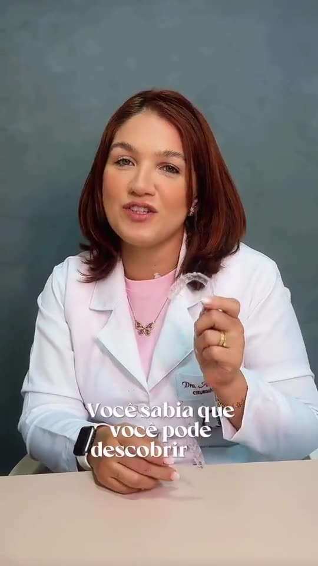

Alinhadores invisíveis SouSmile
Placas transparentes e removíveis que alinham os dentes sem aparelho fixo. A Dra. Ana Karolina é unidade parceira premium da SouSmile em Macapá e também atende o tratamento em Brasília.
- Escaneamento digital dos dentes, sem massinha
- Plano de tratamento montado para o seu caso
- Acompanhamento no consultório durante todo o tratamento